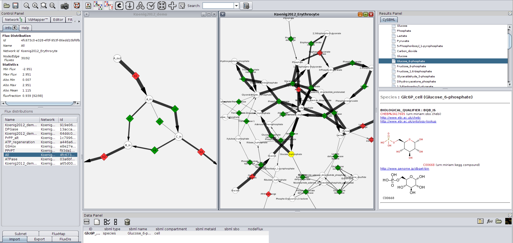

CyFluxVizToolbox
CyFluxVizToolbox CyFluxViz Paper
CyFluxViz PaperIntroduction
CyFluxViz
CyFluxViz is an open-source Cytoscape plugin for the visualization of flux distributions in networks. CyFluxViz currently supports Cytoscape 2.8 and is available for download from SourceForge.
Features
- Import of networks (SBML, GML, XGMML, SIF, BioPAX, PSI-MI)
- Import/export of flux distributions in a variety of formats
- Sub-networks based on flux carrying reactions (flux subetwork) or arbitrary network attributes
- Flexible mapping architecture for all visual attributes
- Supports multiple visual styles
- Full integration with CySBML
- Export of views in variety of formats (SVG, EPS, PDF, BMP, PNG)
- Batch capabilities
- Support of COBRA for Matlab via CyFluxVizToolbox
Please try and have fun The CyFluxViz team.
CyFluxVizToolbox & COBRA support
CyFluxViz supports the visualization of FBA results from COBRA via the Matlab CyFluxVizToolbox. The CyFluxVizToolbox, a collection of Matlab scripts, generating the CyFluxViz files from the COBRA FBA solutions. The CyFluxVizToolbox is available for download here.
Visualization of Tracer Experiments
CyFluxViz allows the visualization of tracer experiments.
Citation
CyFluxViz is developed by Matthias König and was funded by the Virtual Liver Network.


|
Matthias König and Hermann-Georg Holzhütter FluxViz - Cytoscape Plug-in for Vizualisation of Flux Distributions in Networks Genome Informatics 2010, Vol.24, p.96-103 [PubMed] |
 |
Use cases
CyFluxViz was used for the visualization and analysis of FBA results in a genome-scale network of Human hepatocyte metabolism
| Gille C, Bölling C, Hoppe A, Bulik S, Hoffmann S, Hübner K, Karlstädt A, Ganeshan R, König M, Rother K, Weidlich M, Behre J, Holzhütter HG. (2010) HepatoNet1: a comprehensive metabolic reconstruction of the human hepatocyte for the analysis of liver physiology. Mol Syst Biol., 6:411. [PubMed] |
Screenshots
[top]|
 |
|
Fig.1: CyFluxViz visualization of flux distribution in demo network and human erythrocyte network.
FBA Simulations were performed with FASIMU. Reversible reactions are
shown in green, irreversible reactions in red. CyFluxViz integrates seamlessly with
CySBML providing semantic information for the SBML models. (Click for larger version) |
{kind=link}
 |
Fig.2: CyFluxViz visualization of flux distribution in human hepatocyte network. FBA Simulations were performed with FASIMU. The ATP production was set as target flux under varying oxygen conditions. For the layout a standard Cytoscape Layout algorithm was used. CyFluxViz Panel on the left with information about the selected flux distribution and selection area for the loaded flux distributions. (Click for larger version) |

|
Fig.3: CyFluxViz visualization of FASIMU FBA simulation in reconstructed hepatocyte network. Metabolic network consists of glycolysis, gluconeogenesis, pentose phosphate pathway and citrate cycle. Identical network to Fig.1, but different layout algorithm. Manual generated layout was used for the visualisation. On the left the CyFluxViz Control Panel with help dialogue, flux distribution list and settings panel. (Click for larger version) |
Installation & Startup
[top]Install CyFluxViz
Cytoscape 2.8 or later must be installed prior to CyFluxViz.
CyFluxViz works optimal with networks loaded in SBML format via CySBML. We recommend to install CySBML prior to the installation of CyFluxViz and provide networks as SBML files to Cytoscape.
[1] Download the latest CyFluxViz version at http://sourceforge.net/projects/fluxvizplugin/.
[2] Move the CyFluxViz-vX.XX.jar into the Cytoscape plugin directory located in the Cytoscape installation directory under plugins
$CYTO_INSTALL/plugins/.
On Windows Systems Program Files/Cytoscape_v2.8.3/plugins/ on Mac
/Applications/Cytoscape_v2.8.3/plugins.
Update CyFluxViz
To update to current CyFluxViz version replace the old version of CyFluxViz-vX.X.jar with the new version, to uninstall remove the CyFluxViz-vX.X.jar from the plugin folder.
Start CyFluxViz
The plugin is loaded and installed during the next Cytoscape startup. To start CyFluxViz click the CyFluxViz icon in the Cytoscape toolbar  which will load the CyFluxViz panel.
which will load the CyFluxViz panel.
Short Tutorial
[top]
CyFluxViz is integrated into Cytoscape at startup and available via the CyFluxViz Panel in the Cytoscape Control Panel after clicking the CyFluxViz icon in the Cytoscape toolbar  .
.

|
Fig.4: CyFluxViz Panel (on the left) consisting of three main areas:
In the example on the left additional information for the flux distribution '03_atp_cyto.val' is displayed in the Information Area. The Flux Distribution Area displays the loaded Flux distributions and is mainly used for the selection of the flux distribution for visualisation and image export. The Settings Area hosts the main functionality. Additional flux distributions or simulation information can be loaded, the view can be limited to the flux containing subnetwork or flux distributions can be exported as images. The mapping function for the flux mapping can also be adapted in this area. (Click for larger image) |
The CyFluxViz workflow consists of (1) loading a network, (2) loading corresponding flux distributions via val files for the network and (3) selecting the flux distribution of interest for visualization.
Loading network
Network for the visualisation has to be loaded (session file or SBML import of network via CySBML).
The 'sbml type' node attribute with values 'species' or 'reaction' is necessary for all nodes for CyFluxViz. This attribute is automatically generated if the network is imported as SBML via CySBML. If the 'sbml type' node attribute is not available it has to be generated manually.
Loading flux distributions
After loading the network for the flux visualisation the flux distributions for the network have to be loaded. This is managed via Load val. Node attributes for the val files and the necessary edge attributes (edge_val & edge_val_dir) are generated.
Flux files (*.val) consist of id -> flux mappings corresponding to the loaded network. The used network and flux files have to be consistent in regard to the node identifiers.
The loaded flux distributions are shown in the Flux Distributions Area. To visualise the fluxes select one of the loaded flux files in the table. The information about the selected flux distribution is displayed in the information panel and the flux mapping is updated based on the selected flux distribution.
Visualisation of flux subnetworks
CyFluxViz can visualise the flux containing subnetwork in the full network graph. Only the edges with (flux != 0.0) and the adjacent 'reaction' and 'species' nodes are shown. To limit the view to the flux subnetwork activate flux subnetwork in the Settings Area.
Apply additional mappings
Additional mappings of node and edge attributes can be used in the visualisation. These additional mappings are generated in the VisualMapper in the Control panel. So for example the localisation of the metabolic network elements can be mapped to the node color or gene expression values to the node size.